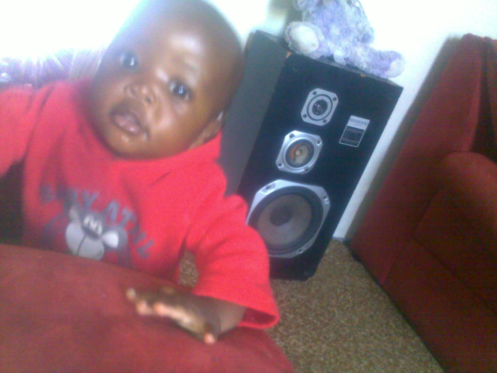

July 8, 2012
I was born on July 8, 2012, at Bertha Gxowa Hospital in Germiston, South Africa. I am proud to be part of an amazing family—my parents are Tinashe and Winnet Mutunha, and I share my home with my little sister, Johanna Mutunha. Ever since I was young, I've had a deep passion for technology, gaming, and figuring out how software powers the world around us.

Software engineers design and build applications, operating systems, and games. Globally, software engineering is one of the highest-paying and most in-demand careers, with average salaries ranging from $90,000 to well over $150,000+ per year depending on experience and location, offering incredible remote work flexibility and creative freedom.

Gaming isn't just about entertainment—it builds elite problem-solving skills, hand-eye coordination, and strategic thinking. Many professional developers and system architects credit their early love for video games as the spark that drove them to learn programming, reverse-engineer game mechanics, and build their own custom software tools.

Combining the analytical mindset of software engineering with the immersive engagement of gaming, my goal is to master modern programming languages, build high-performance applications, and eventually create software and games that inspire millions around the globe.

The global gaming industry generates over $180 billion annually—surpassing both the movie and music industries combined. Meanwhile, software development job growth is projected to grow much faster than the average for all occupations over the next decade.